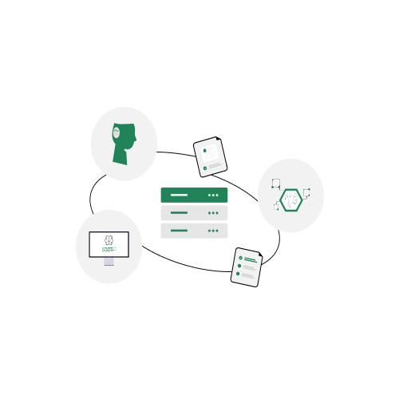
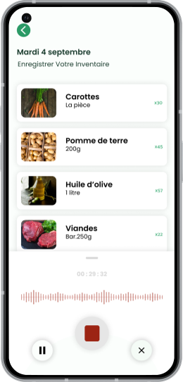
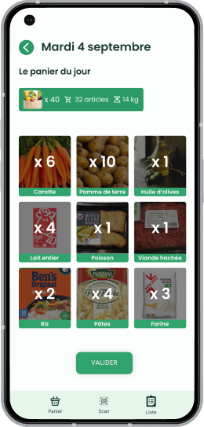

DE LA SIMPLICITE
Une prise en main immédiate, sans effort.

Une solution clé en main pour les bénévoles.
Télécharger gratuitementVous êtes une structure qui permet aux usagers de récolter des paniers de nourriture? Vous souhaitez optimiser votre travail et celui de vos bénévoles? Comment vous faciliter la redistribution d’invendus alimentaires ?
Nos solutions : Faire l’inventaire des récoltes d’invendus avec une commande vocal, les organiser en paniers, les rendre visibles aux usagers Gérer les stocks d’invendus et organiser les paniers.

Une prise en main immédiate, sans effort.

Gagner du temps sur la gestion de votre association.
Gérez inventaires, paniers et distributions en un seul outil.
Vous êtes une structure qui permet aux usagers de récolter des paniers de nourriture? Vous souhaitez optimiser votre travail et celui de vos bénévoles? Comment vous faciliter la redistribution d’invendus alimentaires ?
Nos solutions : Faire l’inventaire des récoltes d’invendus avec une commande vocal, les organiser en paniers, les rendre visibles aux usagers Gérer les stocks d’invendus et organiser les paniers.


Après la génération de l'inventaire par commande vocale, un algorithme génère des paniers identiques et équilibrés à partir de cet inventaire, prêts à être distribués.
Plus de temps pour aider, moins de temps pour gérer. Notre application automatise la création des paniers alimentaires pour une distribution rapide, équitable et sans gaspillage.
Le scan de QR code permet une identification instantanée des bénéficiaires et simplifie la distribution des paniers pour le personnel de l'association.
Résultat : moins d’attente, moins d’erreurs et plus de fluidité.

Adrien
“Depuis que nous utilisons l’application Au Bon Panier, l’inventaire ainsi que la création des paniers est optimiser”
Tatiana
"Depuis que j’utilise l’application Au Bon Panier , mes actions sont simplifiés et j’ai gagné beaucoup de temps."
Malika
“Depuis que j’utilisel’application Au Bon Panier, je suis plus rapide et les bénéficiaires n’attendent plus.”